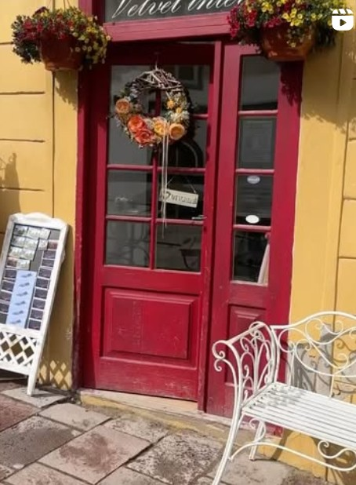

Gratulálunk! Eljutottatok a kincskereső játék végére. Ez a hely nem egy tárna, nem egy templom és nem egy torony, hanem egy különleges bolt: a Velvet Interior.
A bolt tele van meleg fényekkel, illatokkal, apró kincsekkel és olyan tárgyakkal, amelyről nehéz eldönteni, hogy díszek vagy történetek. Ha beléptek, olyan, mintha maga Selmecbánya hangulata gyűlt volna össze itt: a régi motívumok, a modern ötletek és a kézműves tárgyak együtt mesélik tovább a város történetét.
Itt választhatjátok ki a saját jutalmatokat. Nincs rossz választás – minden tárgy egy-egy emléket fog őrizni ebből a kalandból.
Tipp:
Ha szeretitek a kerámiákat, nézzetek körül az Árkád-soron is! Egy másik boltban csodaszép kézzel készült bögréket, tányérokat és dísztárgyakat találtok. Érdemes benézni, igazi selmeci hangulatot árasztanak.
🎉 Gratulálunk! Sikeresen teljesítettétek a teljes kincskereső kalandot! 🎉